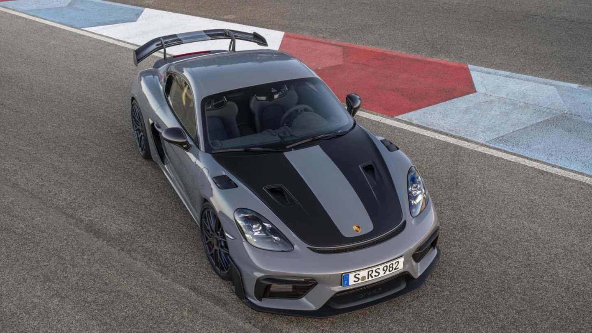
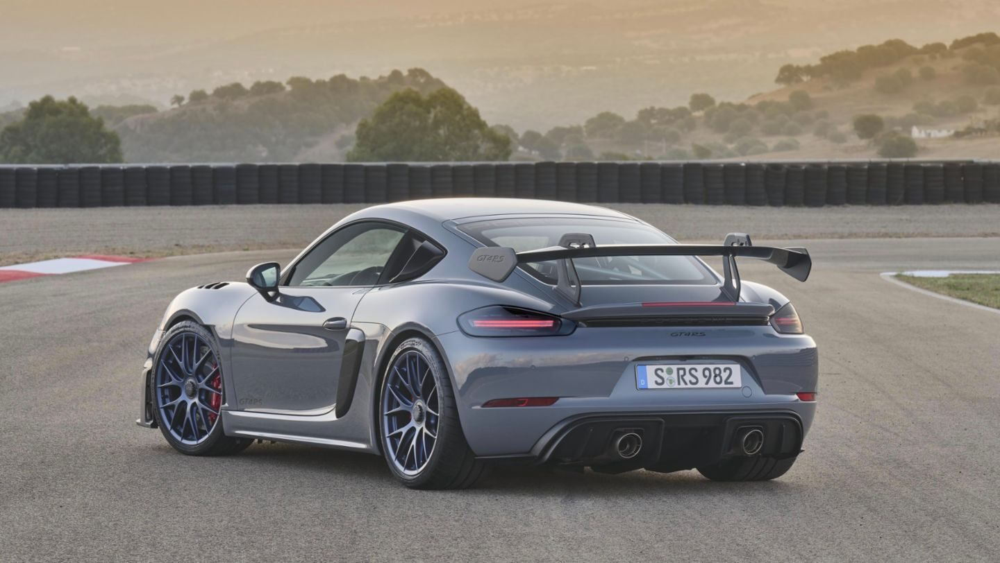
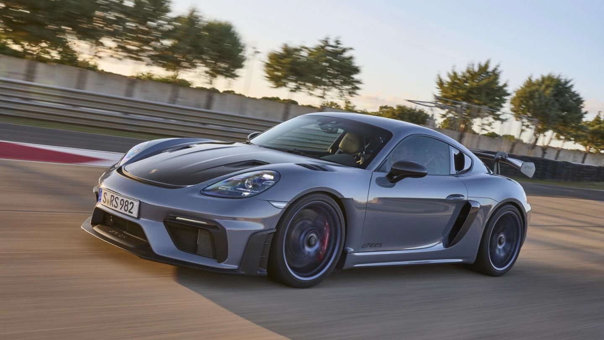
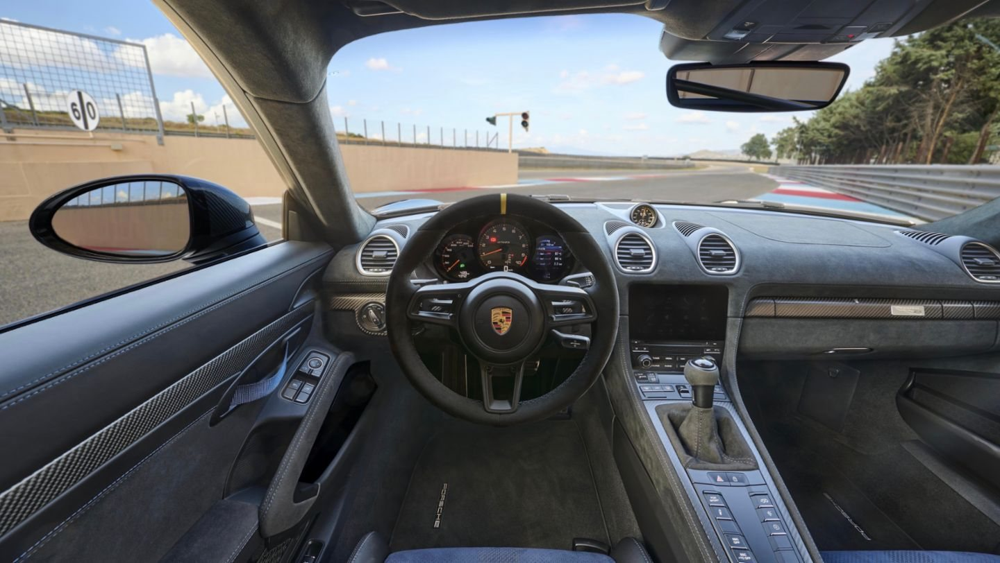
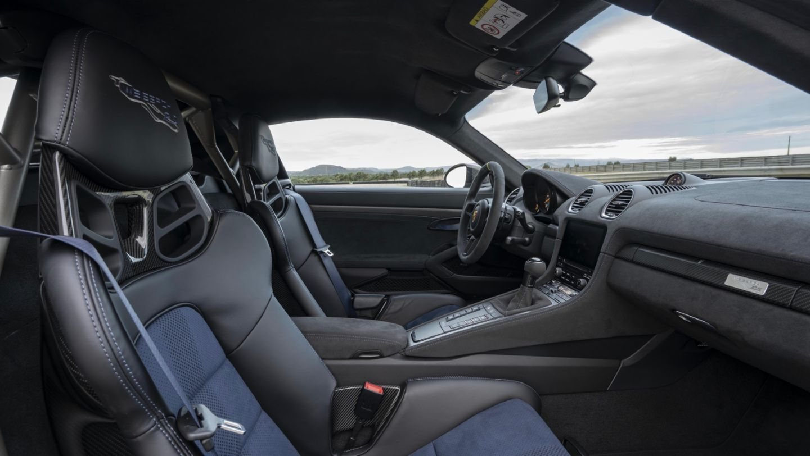

Porsche 718 Cayman GT4 RS

Описание
Спортивное купе с большим задним антикрылом и двухместным салоном.
Характеристики
- Год выпуска: 2022
- Пробег: 9 000 км
- Кузов: купе
Цена: 20 000 000 ₽
Другие фотографии



